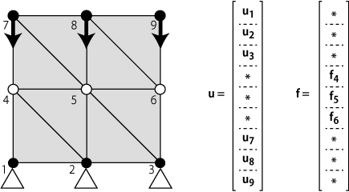

第1回 メッシュのデータ構造とCanvas要素による描画
第2回 Numeric.jsによる線形代数
第3回 変形の表現と境界条件
第3回では有限要素法（FEM）における変形の表現と解くべき方程式、そして境界条件の設定方法について解説します。 FEMの枠組みは一度完成させてしまえば何度も同じコードを使うことができるので、既存のライブラリを使っても良いでしょう。 しかし境界条件の設定は対象とする問題に応じて変更しなければならず、ユーザの責任となります。 本記事では境界条件の設定を行える最低限の内容として変位ベクトル場による変形の表現と剛性方程式について解説します。 剛性方程式の立て方と解き方は今後の記事で扱うことにし、境界条件の設定に焦点を当てます。
物体の形状はメッシュのデータ構造を用いて節点と三角形要素によって表すことができました（第1回 メッシュのデータ構造とCanvas要素による描画）。
物体の初期形状のメッシュデータを持っているとき，各節点の変位ベクトルを定義することでメッシュの変形を表現することができます。
具体例として四角形物体の圧縮変形の例を下の図に示します。
変形前後の形状を比較するためメッシュを重ねて書いた図を示します。 変形前の形状はメッシュデータとして持っているので，各節点に変位ベクトルを定義すれば変形後の形状を得ることができるということになります。
FEMでは変位ベクトルを縦につなげて大きな列ベクトルを作成し、これを全体変位ベクトルと呼びます。 今回の例では下の図のようになります。
二次元の変形表現では全体変位ベクトルは節点数をnとすると2n次元の列ベクトルとなります。
それではこれらのデータ構造により任意の変形形状が表現できることを、javascriptで実装して確認してみましょう。
今回からはHTMLファイルとjavascriptファイルを分離します。
HTMLファイルとしてindex.html，javascriptファイルとしてfem.js，main.jsを作成します。
fem.jsはFEMクラスの定義，main.jsは主要な処理と描画，イベント処理を記述することにします。
fem.jsとmainjsはindex.htmlと同じディレクトリに配置してください。
18行目でnumeric.js，20行目でfem.js，21行目でmain.jsを読み込みます。 この順序は変更できません。
<!doctype html>
<html>
<head>
<meta charset="utf-8">
<title>FEM</title>
<!-- スタイルシート -->
<style type="text/css">
#model_viewer {
width: 500px;
height: 500px;
border: 1px solid #000000;
background-color: #FFFFFF;
}
</style>
<!-- jquery -->
<script type="text/javascript" src="http://ajax.googleapis.com/ajax/libs/jquery/1/jquery.min.js"></script>
<!-- numeric javascript -->
<script type="text/javascript" src="numeric-1.2.6.min.js"></script>
<!-- 自分のjavascriptコード -->
<script type="text/javascript" src="fem.js"></script>
<script type="text/javascript" src="main.js"></script>
</head>
<body>
<canvas id="model_viewer"></canvas>
</body>
</html>
新しいメンバとして全体変位ベクトルを追加し，メッシュ生成の最後にnumeric.jsのメソッドを使って零ベクトルに初期化しています。
// JavaScript source code
function FEM() {
this.pos = []; // 現在位置
this.initpos = []; // 初期位置
this.tri = []; // 三角形メッシュの節点リスト
this.u = []; // 全体変位ベクトル
}
// 四角形メッシュのノード位置配列
FEM.prototype.rectangleMesh = function (width, height, divx, divy) {
// 節点の現在位置・初期位置の作成
for(var i=0; i<divy+1; i++) {
for(var j=0; j<divx+1; j++) {
this.pos.push([width/divx*j-width*0.5, height/divy*i]);
this.initpos.push([width/divx*j-width*0.5, height/divy*i]);
}
}
// 三角形メッシュの作成
for(var i=0; i<divy; i++) {
for(var j=0; j<divx; j++) {
this.tri.push([j+1+(divx+1)*i, j+1+(divx+1)*(i+1), j+(divx+1)*(i+1)]);
this.tri.push([j+(divx+1)*i, j+1+(divx+1)*i, j+(divx+1)*(i+1)]);
}
}
// 全体変位ベクトルの初期化
this.u=numeric.linspace(0, 0, 2*this.pos.length);
}
22行目から全体変位ベクトルに値を設定しています。数値で見るとわかりにくいですが，実行結果を見ればこのベクトルがあらわす変形形状が確認できます。
全体変位ベクトルに設定する値を変え，変形形状に反映されることをぜひ確認してみてください。
32行目から全体変位ベクトルを節点初期位置に加算することで節点現在位置を更新しています。
// JavaScript source code
// HTMLを読み終わった後に実行する関数
$(document).ready(function () {
// 2dコンテキスト取得
var canvas = $("#model_viewer");
var context = canvas.get(0).getContext("2d");
canvas.get(0).width = canvas.get(0).clientWidth;
canvas.get(0).height = canvas.get(0).clientHeight;
var canvasWidth = canvas.get(0).width;
var canvasHeight = canvas.get(0).height;
// 座標変換
var xzero = canvasWidth*0.5; // キャンバス要素の幅の半分
var yzero = canvasHeight*0.9; // キャンバス要素の高さの90%の部分
context.setTransform(1, 0, 0, -1, xzero, yzero);
// FEMクラスのインスタンス化
var fem = new FEM();
fem.rectangleMesh(200, 200, 2, 2);
// 変位ベクトルの設定
fem.u[2*3] = -40;
fem.u[2*3+1] = -20;
fem.u[2*4+1] = -20;
fem.u[2*5] = 40;
fem.u[2*5+1] = -20;
fem.u[2*6+1] = -40;
fem.u[2*7+1] = -40;
fem.u[2*8+1] = -40;
// 変位ベクトルによる現在形状の更新
for(var i=0; i<fem.pos.length; i++) {
for(var j=0; j<2; j++){
fem.pos[i][j] = fem.initpos[i][j] + fem.u[2*i+j];
}
}
// 初期形状の描画
context.strokeStyle = 'black';
for(var i=0; i<fem.tri.length; i++) {
drawtri(fem.initpos[fem.tri[i][0]], fem.initpos[fem.tri[i][1]], fem.initpos[fem.tri[i][2]]);
}
// 現在形状の描画
context.strokeStyle = 'red';
for(var i=0; i<fem.tri.length; i++) {
drawtri(fem.pos[fem.tri[i][0]], fem.pos[fem.tri[i][1]], fem.pos[fem.tri[i][2]]);
}
// 描画用関数
// 線の描画
function drawLine(p1, p2) {
context.beginPath();
context.moveTo(p1[0], p1[1]);
context.lineTo(p2[0], p2[1]);
context.stroke();
}
// 円の描画
function drawCircle(p, radius) {
context.beginPath();
context.arc(p[0], p[1], radius, 0, 2*Math.PI, true);
context.stroke();
context.fill();
}
// 三角形の描画
function drawtri(p1, p2, p3) {
context.beginPath();
context.moveTo(p1[0], p1[1]);
context.lineTo(p2[0], p2[1]);
context.lineTo(p3[0], p3[1]);
context.closePath();
context.stroke();
}
});
このファイルの実行結果は下の図のようになります。変形例で扱った圧縮形状が得られました。
この実装ではすべての節点の変位を指定しましたが，FEMでは境界条件を設定すれば自動的に変位ベクトルが得られます。
FEMでは変位ベクトルと対応した外力ベクトルを定義します。全体外力ベクトルは全体変位ベクトルと同様に2n次元の列ベクトルです。 弾性力学におけるつりあいの方程式では変位と外力の関係が記述されています。
本記事で対象とする微小変形理論における線形弾性体ではつり合いの方程式は次のようになります。
ここでKは2n×2nの行列であり剛性マトリクスと呼びます。 剛性マトリクスはメッシュの形状と材料特性から決定される定数です。 この方程式は剛性方程式と呼びます。 この方程式は第2回で言及した連立一次方程式そのものです。 したがって全ての変位ベクトルの値がわかっていれば，外力ベクトルは行列をベクトルに掛け合わせることで得られます。 逆に外力ベクトルの値がわかっていれば，変位ベクトルは連立一次方程式を解けば得られます。 しかし，どんな場合でも連立一次方程式が解けるとは限りません。 これについては今後の記事で述べます。 それでは境界条件の設定方法について具体例を考えながら解説していきます。
FEMでは境界条件として各節点について変位か外力かのどちらかの値を設定します。
下の図のように変位既知である節点と外力既知である節点を区別し，
既知な値をFEMの境界条件として与えます。
環境に固定されている領域は変位がゼロとなるため変位既知，
強制的に変位を与える領域は当然変位既知となります。
外力はどのように設定すればよいでしょうか。
外力として圧力、重力、電磁力、慣性力などがあります。
これらは物体の表面や体積に対して作用する力です。
FEMでは要素ごとにこれらの外力を変換して等価な節点力に置き換えます。
このような処理は多少煩雑になるため本記事では扱いません。
したがって本記事においては変位既知でない節点はすべて外力が零の外力既知節点となります。

境界条件を表現するデータ構造の一例は以下のようになります。 外力既知節点リストをflist, 変位既知節点リストdlist, 既知な変位を結合した列ベクトルud, そして既知な外力を結合した列ベクトルffです。
第1回 メッシュのデータ構造とCanvas要素による描画
第2回 Numeric.jsによる線形代数
第3回 変形の表現と境界条件